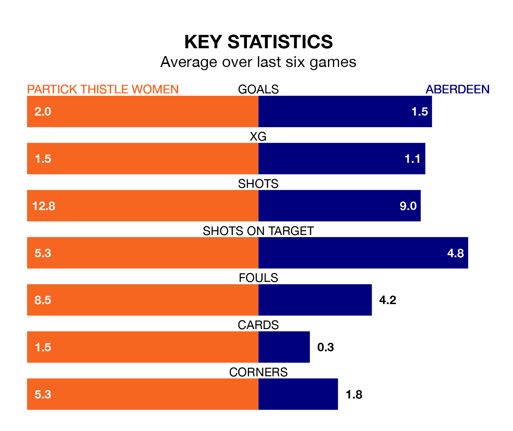

Aberdeen travel to Partick Thistle Women on Sunday in SWPL 1.
The visitors come into the game on the back of a defeat in their last match, having lost to Hibernian Women 7-0 at home.
Thistle also lost their last match, 6-0 against Glasgow City Women.
With 26 goals in 16 games so far this season, Aberdeen are scoring at below the league average rate with 1.6 goals per game. And they are conceding more than average, letting in 52 goals at a rate of 3.2 per game.
Partick Thistle are also below average scorers, with 1.8 goals per game, compared to a league average of 2.2. They have conceded 1.7 goals per game.
In Bayley Hutchison, the away side have one of the league's most on-form strikers so far this season. She has notched 13 goals in 16 appearances, to sit fifth in the scoring charts.
Her goal rate of one every 107 minutes is quicker than that of Cara Henderson, Thistle's top scorer with a goal every 184 minutes, and a total of seven goals in 16 games.
The hosts are in reasonable form in SWPL 1, with four wins and two losses from their last six games.
With two wins and a draw over that period, Aberdeen's form is worse – they have taken seven points from 18, compared to Partick Thistle's 12.
Over the last two years, Partick Thistle and Aberdeen have played each other on five occasions. They won two each, and they drew once.
On average, Thistle scored 2.4 goals and Aberdeen 2.4 in those matches.
Their last meeting was on November 16, when Partick Thistle won 3-1 away.
Partick Thistle are sixth in the table after 16 games, of which they have won nine and lost seven, earning 27 points.
Aberdeen are one place behind Thistle in seventh, with six wins and one draw putting them on 19 points.
Updated: 13:38 (UTC), 10/01/24